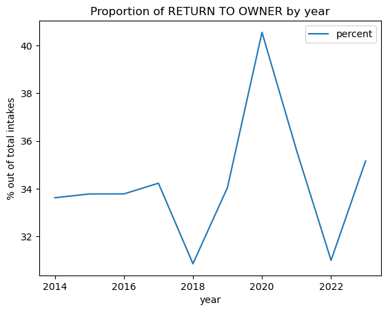
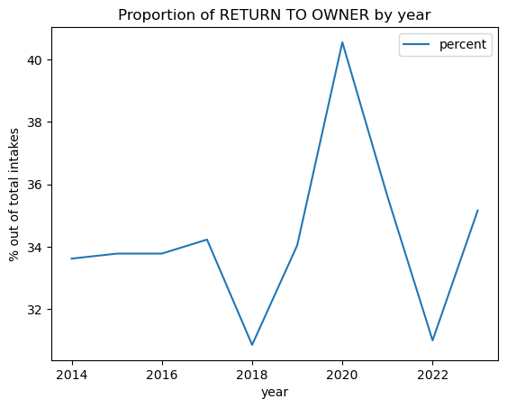

# Required imports
import pandas as pd
import matplotlib.pyplot as plt
# Read the csv file containing data on animal shelter in Sonoma County
shelter_data = pd.read_csv("Animal_Shelter_Data.csv")
shelter_data
| Name | Type | Breed | Color | Sex | Size | Date Of Birth | Impound Number | Kennel Number | Animal ID | ... | Intake Subtype | Outcome Type | Outcome Subtype | Intake Condition | Outcome Condition | Intake Jurisdiction | Outcome Jurisdiction | Outcome Zip Code | Location | Count | |
|---|---|---|---|---|---|---|---|---|---|---|---|---|---|---|---|---|---|---|---|---|---|
| 0 | RAZOR | DOG | BOSTON TERRIER | BLACK/WHITE | Neutered | SMALL | 10/29/2009 | K22-043412 | TRUCK | A396382 | ... | FIELD | RETURN TO OWNER | FLD_IDTAG | UNKNOWN | HEALTHY | SANTA ROSA | SANTA ROSA | 95404.0 | 95404(38.43807, -122.71247) | 1 |
| 1 | NaN | OTHER | PIGEON | GRAY/WHITE | Unknown | SMALL | NaN | K23-044095 | TRUCK | A416206 | ... | FIELD | EUTHANIZE | INJ SEVERE | UNKNOWN | HEALTHY | SANTA ROSA | NaN | NaN | NaN | 1 |
| 2 | MAX | DOG | BORDER COLLIE | BLACK/TRICOLOR | Neutered | MED | 03/10/2020 | K23-044090 | DS80 | A399488 | ... | FIELD | RETURN TO OWNER | OVER THE COUNTER_CALL | UNKNOWN | PENDING | COUNTY | COUNTY | 95472.0 | 95472(38.40179, -122.82512) | 1 |
| 3 | NaN | CAT | DOMESTIC LH | GRAY/WHITE | Spayed | SMALL | 06/26/2011 | K22-043405 | VET | A414520 | ... | FIELD | DISPOSAL | DOA | UNKNOWN | DEAD | COUNTY | SANTA ROSA | 95403.0 | 95403(38.51311, -122.75502) | 1 |
| 4 | PUDGY | DOG | CHIHUAHUA SH/SCHIPPERKE | TAN | Neutered | MED | 07/20/2013 | K23-043813 | DA27 | A415428 | ... | OVER THE COUNTER | TRANSFER | MUTTVILLE | UNKNOWN | HEALTHY | SANTA ROSA | OUT OF COUNTY | 94103.0 | 94103(37.77672, -122.40779) | 1 |
| ... | ... | ... | ... | ... | ... | ... | ... | ... | ... | ... | ... | ... | ... | ... | ... | ... | ... | ... | ... | ... | ... |
| 25003 | BUBA | CAT | DOMESTIC SH | GRAY/WHITE | Neutered | SMALL | 10/15/2017 | K19-033988 | CA02 | A392014 | ... | OVER THE COUNTER | ADOPTION | WALKIN | HEALTHY | HEALTHY | SANTA ROSA | *HEALDSBURG | 95448.0 | 95448(38.61064, -122.86883) | 1 |
| 25004 | *JESSICA | OTHER | AMERICAN | WHITE/BROWN | Spayed | SMALL | 11/08/2017 | K18-028720 | CA01 | A374156 | ... | OVER THE COUNTER | TRANSFER | HSSC | HEALTHY | HEALTHY | SANTA ROSA | COUNTY | 95407.0 | 95407(38.41483, -122.72707) | 1 |
| 25005 | SHINER | DOG | PIT BULL | TAN/WHITE | Neutered | LARGE | 12/22/2012 | K14-010771 | DS70 | A293651 | ... | OVER THE COUNTER | EUTHANIZE | AGGRESSIVE | UNTREATABLE | UNTREATABLE | SANTA ROSA | COUNTY | 95476.0 | 95476(38.29188, -122.45728) | 1 |
| 25006 | *NEWTON | DOG | CHIHUAHUA SH/MIX | BROWN/WHITE | Neutered | SMALL | 07/28/2011 | K20-036116 | DS91 | A398415 | ... | FIELD | TRANSFER | ROCKET DOG | HEALTHY | HEALTHY | SANTA ROSA | OUT OF COUNTY | 94146.0 | 94146 | 1 |
| 25007 | NaN | OTHER | SHEEP | WHITE | Female | LARGE | NaN | K18-027518 | YARD | A369354 | ... | FIELD | RETURN TO OWNER | NaN | UNKNOWN | NaN | COUNTY | COUNTY | 95472.0 | 95472(38.40179, -122.82512) | 1 |
25008 rows × 24 columns
What are the most common names for dogs and cats in the shelter?#
top_names = shelter_data.groupby(["Type","Name"], as_index=False).size()
top_names = top_names.sort_values(by='size', ascending=False).groupby(["Type"]).head(3)
top_names
| Type | Name | size | |
|---|---|---|---|
| 4615 | DOG | BUDDY | 131 |
| 6009 | DOG | LUNA | 115 |
| 4403 | DOG | BELLA | 104 |
| 2291 | CAT | MILO | 21 |
| 2197 | CAT | LUCY | 19 |
| 2685 | CAT | SMOKEY | 17 |
| 7742 | OTHER | *JESSICA | 9 |
| 7879 | OTHER | *ROGER | 7 |
| 8051 | OTHER | OREO | 5 |
From the table above, we can see that the top three most common names for dogs at the adoption centers are Buddy, Luna, and Bella. On the other hand, the top three most common names for adopted cats are Milo, Lucy, and Smokey.
Outcomes#
We can assess the performance of the shelters in Sonoma County by analyzing the outcome types.#
First, we’ll drop the rows that contains null values for Outcome Type.
# Drop NA
shelter_data.dropna(subset=['Outcome Type'], inplace=True)
shelter_data.isnull().sum()
Name 6500
Type 0
Breed 0
Color 0
Sex 0
Size 35
Date Of Birth 6162
Impound Number 0
Kennel Number 0
Animal ID 0
Intake Date 0
Outcome Date 0
Days in Shelter 0
Intake Type 0
Intake Subtype 0
Outcome Type 0
Outcome Subtype 317
Intake Condition 0
Outcome Condition 344
Intake Jurisdiction 0
Outcome Jurisdiction 3366
Outcome Zip Code 3424
Location 3424
Count 0
dtype: int64
Outcome by Species#
# Select species and outcome type
outcome_data = shelter_data.loc[:,["Type", "Outcome Type"]]
outcome_data
| Type | Outcome Type | |
|---|---|---|
| 0 | DOG | RETURN TO OWNER |
| 1 | OTHER | EUTHANIZE |
| 2 | DOG | RETURN TO OWNER |
| 3 | CAT | DISPOSAL |
| 4 | DOG | TRANSFER |
| ... | ... | ... |
| 25003 | CAT | ADOPTION |
| 25004 | OTHER | TRANSFER |
| 25005 | DOG | EUTHANIZE |
| 25006 | DOG | TRANSFER |
| 25007 | OTHER | RETURN TO OWNER |
24843 rows × 2 columns
# Calculate the proportion of species within each outcome type
top_outcome = outcome_data.groupby([ "Type","Outcome Type"],as_index=False).size()
top_outcome = top_outcome.groupby([ "Type","Outcome Type"], group_keys=False).agg({"size":"sum"}).groupby(
level=0,group_keys=False).apply(lambda x: 100*x/x.sum()).sort_values(
by=["Type","size", "Outcome Type"], ascending=[False, False, True])
top_outcome =top_outcome.rename(columns={"size":"percent"})
top_outcome
| percent | ||
|---|---|---|
| Type | Outcome Type | |
| OTHER | TRANSFER | 42.793682 |
| EUTHANIZE | 21.816387 | |
| ADOPTION | 21.273445 | |
| RETURN TO OWNER | 9.871668 | |
| DIED | 2.270484 | |
| DISPOSAL | 1.727542 | |
| ESCAPED/STOLEN | 0.246792 | |
| DOG | RETURN TO OWNER | 50.339310 |
| ADOPTION | 23.551682 | |
| TRANSFER | 14.522466 | |
| EUTHANIZE | 10.815058 | |
| RTOS | 0.264305 | |
| DISPOSAL | 0.250018 | |
| DIED | 0.221444 | |
| ESCAPED/STOLEN | 0.035717 | |
| CAT | ADOPTION | 40.938988 |
| TRANSFER | 26.570651 | |
| EUTHANIZE | 16.273531 | |
| RETURN TO OWNER | 13.211613 | |
| DISPOSAL | 1.780449 | |
| DIED | 1.020640 | |
| RTOS | 0.124745 | |
| ESCAPED/STOLEN | 0.079383 |
# Create bar plot to visualize most common outcome type within each species
ax = top_outcome.pivot_table(index="Type", columns="Outcome Type").plot(kind='bar')
ax.legend(loc='center left', bbox_to_anchor=(1, 0.5))
ax.set_ylabel("% of Outcome Type")
ax.set_title("Proportion of Outcome Within Each Species");

Adoption was the most common outcome for cats at 41%. Half of the dogs in the shelter are being returned to owner, whereas most of the other species (43%) are being transferred.
Evaluating yearly performance of the shelter based on (adoption rate, transfer rate, return to owner, euthanasia rate)#
rate = variable/total # of intakes
# Display the overall rates for each species and outcome type throughout all years
rates_df = top_outcome.pivot_table(index="Type", columns="Outcome Type")
rates_df
| percent | ||||||||
|---|---|---|---|---|---|---|---|---|
| Outcome Type | ADOPTION | DIED | DISPOSAL | ESCAPED/STOLEN | EUTHANIZE | RETURN TO OWNER | RTOS | TRANSFER |
| Type | ||||||||
| CAT | 40.938988 | 1.020640 | 1.780449 | 0.079383 | 16.273531 | 13.211613 | 0.124745 | 26.570651 |
| DOG | 23.551682 | 0.221444 | 0.250018 | 0.035717 | 10.815058 | 50.339310 | 0.264305 | 14.522466 |
| OTHER | 21.273445 | 2.270484 | 1.727542 | 0.246792 | 21.816387 | 9.871668 | NaN | 42.793682 |
# Add year column to the dataframe using Outcome Date
outcome_data2 = shelter_data.loc[:,["Outcome Date","Outcome Type"]]
outcome_data2["Outcome Date"] = pd.to_datetime(outcome_data2['Outcome Date'])
outcome_data2["year"] = pd.DatetimeIndex(outcome_data2['Outcome Date']).year
outcome_data2
| Outcome Date | Outcome Type | year | |
|---|---|---|---|
| 0 | 2022-12-26 | RETURN TO OWNER | 2022 |
| 1 | 2023-03-15 | EUTHANIZE | 2023 |
| 2 | 2023-03-15 | RETURN TO OWNER | 2023 |
| 3 | 2022-12-27 | DISPOSAL | 2022 |
| 4 | 2023-03-15 | TRANSFER | 2023 |
| ... | ... | ... | ... |
| 25003 | 2019-10-23 | ADOPTION | 2019 |
| 25004 | 2018-10-10 | TRANSFER | 2018 |
| 25005 | 2014-10-02 | EUTHANIZE | 2014 |
| 25006 | 2020-08-20 | TRANSFER | 2020 |
| 25007 | 2018-03-13 | RETURN TO OWNER | 2018 |
24843 rows × 3 columns
Outcome and Rates#
# Calculate the proportion of outcome type in each year
yearly_rate = outcome_data2.groupby([ "year","Outcome Type"],as_index=False).size()
yearly_rate = yearly_rate.groupby(["year","Outcome Type"], group_keys=False).agg({"size":"sum"}).groupby(
level=0,group_keys=False).apply(lambda x: 100*x/x.sum()).sort_values(
by=["year","size", "Outcome Type"], ascending=[True, False, True]).reset_index()
yearly_rate =yearly_rate.rename(columns={"size":"percent"})
yearly_rate
| year | Outcome Type | percent | |
|---|---|---|---|
| 0 | 2014 | ADOPTION | 37.566635 |
| 1 | 2014 | RETURN TO OWNER | 33.615553 |
| 2 | 2014 | TRANSFER | 14.016933 |
| 3 | 2014 | EUTHANIZE | 13.295704 |
| 4 | 2014 | DIED | 0.940734 |
| ... | ... | ... | ... |
| 66 | 2023 | EUTHANIZE | 13.112392 |
| 67 | 2023 | DIED | 1.008646 |
| 68 | 2023 | DISPOSAL | 1.008646 |
| 69 | 2023 | RTOS | 0.576369 |
| 70 | 2023 | ESCAPED/STOLEN | 0.288184 |
71 rows × 3 columns
# Function to plot trend line for rates given Outcome Type
def trend_proportion(Outcome):
outcome_type = yearly_rate[yearly_rate["Outcome Type"]==Outcome]
ax = outcome_type.plot(x="year",y="percent")
ax.set_ylabel("% out of total intakes")
ax.set_title("Proportion of "+Outcome+" by year")
# Overall rates
adoption = trend_proportion("ADOPTION")
euthanize = trend_proportion("EUTHANIZE")
transferred = trend_proportion("TRANSFER")
rto = trend_proportion("RETURN TO OWNER")


 

It appears that as the adoption rate declines throughout the years, the shelter chooses to transfer than animals rather than euthanizing.